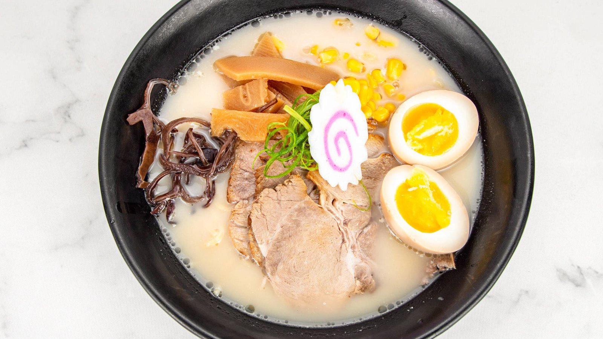
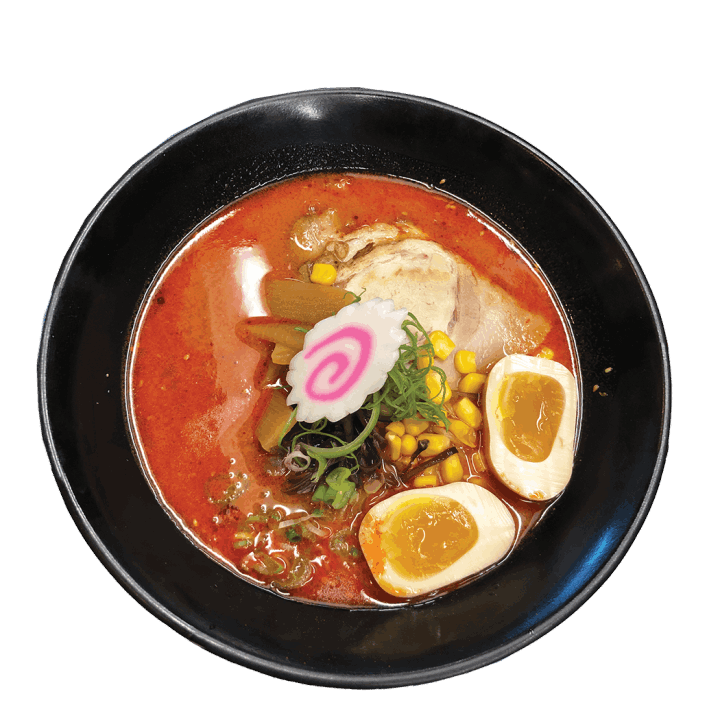

Tonkotsu Ramen
$15.95
The heart of all our ramen — pork bone broth simmered for hours until hearty and creamy.
- House signature
Ramen & Noodle · Oliver, Edmonton
Peanut-sesame Tan Tan, tonkotsu simmered for hours, and Hu's own family noodle bowls. Served in a small, warm room on 104 Avenue.
Tue–Fri 11:30 am–8 pm · Sat 12–8 pm · Sun 11:30 am–7 pm · Mon closed
4.7 from 433 Google reviews

The house bowl
Tan Tan is the dish guests name more than any other. They describe the broth as rich and layered, a little creamy, and more than simply spicy. One reviewer finished every last drop and called it one of the most satisfying bowls of noodles in Edmonton.
It's built on a homemade peanut and spicy sesame base, then topped with spicy ground pork, peanuts, green onion and nori. Prefer thick noodles? Order it as Tan Tan Udon.
18 bowls, one you'll want
Pick what you're in the mood for. Tap a bowl to jump to it on the menu.
Showing all 18 bowls
“No pork listed” means pork isn't named in the menu description. Broths may share kitchen equipment, so ask your server if it matters.
What guests say
Sub-scores averaged from the 223 reviews that rated each one.
Definitely one of the most satisfying bowls of noodles I've had in Edmonton.
Such a cozy little restaurant to have some wonderful Japanese food!
Staff were very friendly and interacted with our kids which always makes us feel welcome.
You can tell that the food is prepared meticulously.
Find the nook
| Monday | Closed |
|---|---|
| Tuesday | – |
| Wednesday | – |
| Thursday | – |
| Friday | – |
| Saturday | – |
| Sunday | – |
Hours from the restaurant's Instagram bio; holiday hours may differ.